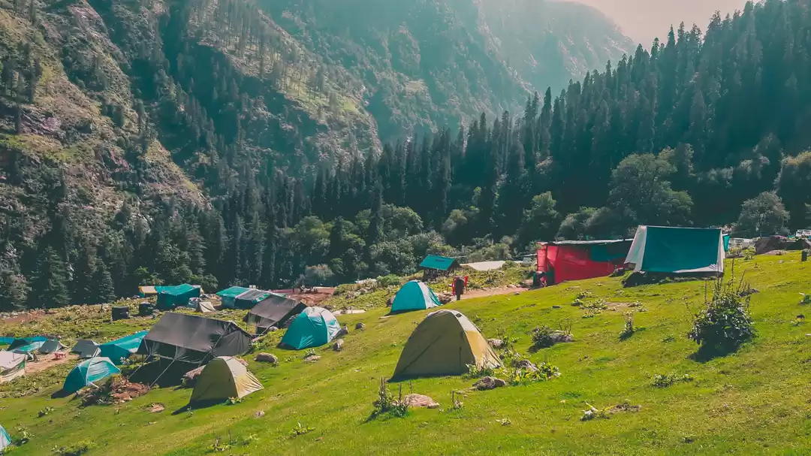
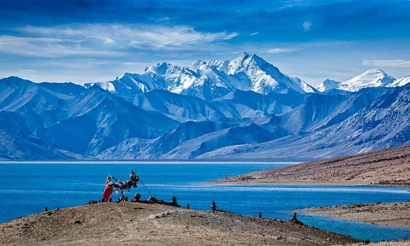
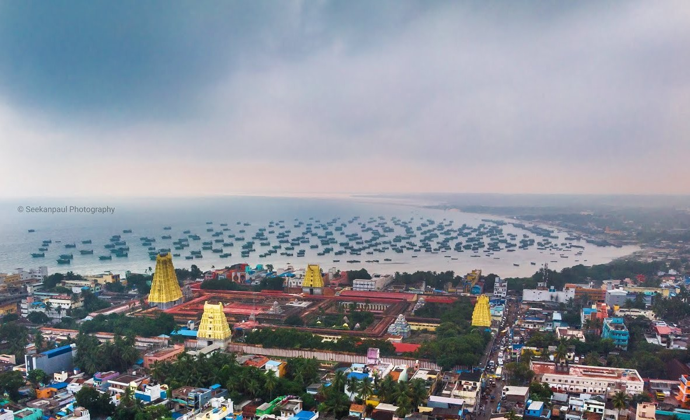
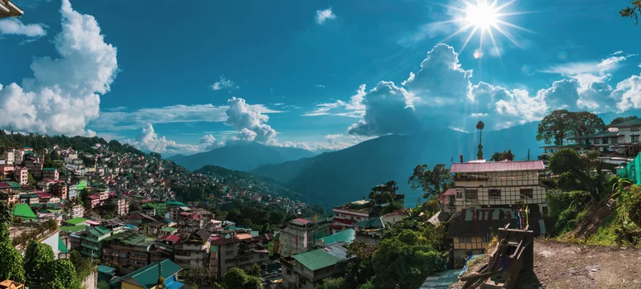

Travel Gallery
KASOL
 View MoreKasol, nestled in the heart of Himachal Pradesh's Parvati Valley, is a paradise for backpackers and nature lovers. As soon as I arrived after a long drive from Delhi, I was welcomed by the crisp mountain air and the soothing sound of the Parvati River flowing through the village. Kasol, with its wooden cafés, cozy shops, and friendly locals, instantly felt like home. The village’s laid-back vibe and its mix of cultures make it a hub for travelers seeking both adventure and peace. One of the highlights of my trip was hiking to Chalal, a nearby village. The trail was lined with towering pine trees and offered breathtaking views of the river below. Chalal’s calm and rustic charm made it the perfect place to relax. My thirst for adventure led me to the Kheerganga trek. The 12-kilometer climb was challenging, but the journey through dense forests, waterfalls, and rugged terrain was unforgettable. At the top, I soaked in the natural hot springs, surrounded by snow-capped peaks—a truly magical experience.
LADAKH
 View MoreLadakh, a high-altitude desert in northern India, is a breathtaking land of stark beauty and serene landscapes. Upon arriving from Leh, the capital, the crisp, thin air and the vast, barren mountains immediately captivated me. The contrast of azure skies against the rugged, brown terrain created a surreal atmosphere. Leh's vibrant markets and warm, welcoming locals added a touch of life to the otherwise tranquil setting. A standout experience was visiting Pangong Lake. The shimmering blue waters, surrounded by rugged mountains, provided an otherworldly view. I spent hours admiring the changing colors of the lake as the sun moved across the sky. The journey to Nubra Valley was equally thrilling. Crossing the world’s highest motorable pass, Khardung La, was exhilarating. Nubra’s unique landscapes, with its sand dunes and double-humped camels, were enchanting. Camping under a starlit sky in this remote desert oasis was an unforgettable adventure.
RAMESHWARAM
 View MoreRameswaram, located in the southeastern tip of India, is a sacred island renowned for its spiritual significance and captivating natural beauty. Arriving in this coastal town, I was immediately enchanted by the serene ambiance and the gentle rhythm of the waves crashing softly on the shores. The highlight of my visit was exploring the magnificent Ramanathaswamy Temple, celebrated for its awe-inspiring architecture and deeply sacred atmosphere. Walking through the temple's grand corridors and witnessing the vibrant, intricate rituals offered a profound sense of tranquility and spiritual connection. The desolate landscape, with its weathered ruins and endless stretches of sand, told a poignant story of nature’s incredible power and resilience. Rameswaram’s unique blend of spirituality, rich history, and unspoiled natural beauty made it an extraordinarily enchanting and memorable destination.

Jaipur, the vibrant capital of Rajasthan, is a city steeped in royal history and rich culture. Upon arriving, I was immediately struck by the majestic forts and palaces that dot the landscape, set against the backdrop of the arid desert. The city's colorful bazaars, bustling with activity and brimming with traditional crafts and spices, added to its lively charm. A highlight of my visit was exploring the magnificent Amber Fort, where the intricate carvings and grand architecture provided a glimpse into the opulent past of the Rajput rulers. The City Palace, with its regal rooms and museum, further showcased Jaipur's royal heritage. Strolling through the vibrant Johari Bazaar, I was captivated by the array of jewelry, textiles, and local handicrafts. A visit to the Hawa Mahal, with its stunning façade and cool breeze, was equally enchanting. Jaipur’s blend of historical grandeur, vibrant markets, and warm hospitality made my stay a truly unforgettable adventure.
GANGTOK
 View MoreGangtok, the charming capital of Sikkim, is a delightful destination nestled in the eastern Himalayas. Upon arriving in this picturesque city, I was immediately captivated by the misty mountain views and the vibrant, bustling streets. Gangtok's unique blend of traditional and modern elements is reflected in its colorful monasteries, lively markets, and friendly local residents. One of the standout experiences was visiting the Enchey Monastery, known for its tranquil ambiance and stunning views of the surrounding peaks. Walking through the monastery grounds, I felt a deep sense of peace and spiritual connection. Another memorable highlight was exploring the vibrant MG Road, where the local shops, cafes, and street food create a lively atmosphere.The serene, glacial lake, framed by snow-capped mountains, offered a breathtaking sight. Riding a yak by the lakeside made the visit unforgettable. Gangtok's mix of natural beauty, cultural richness, and warm hospitality made my stay an extraordinary adventure.